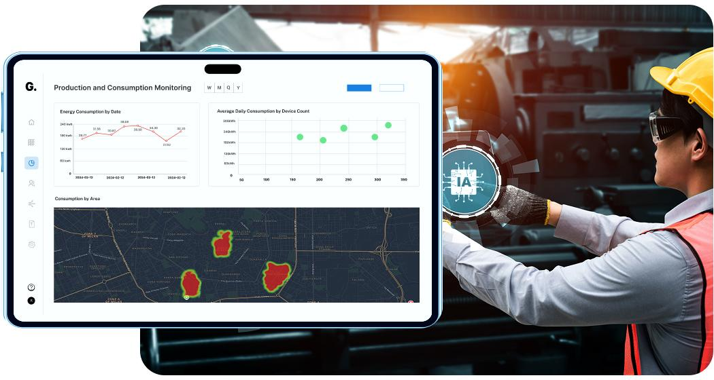
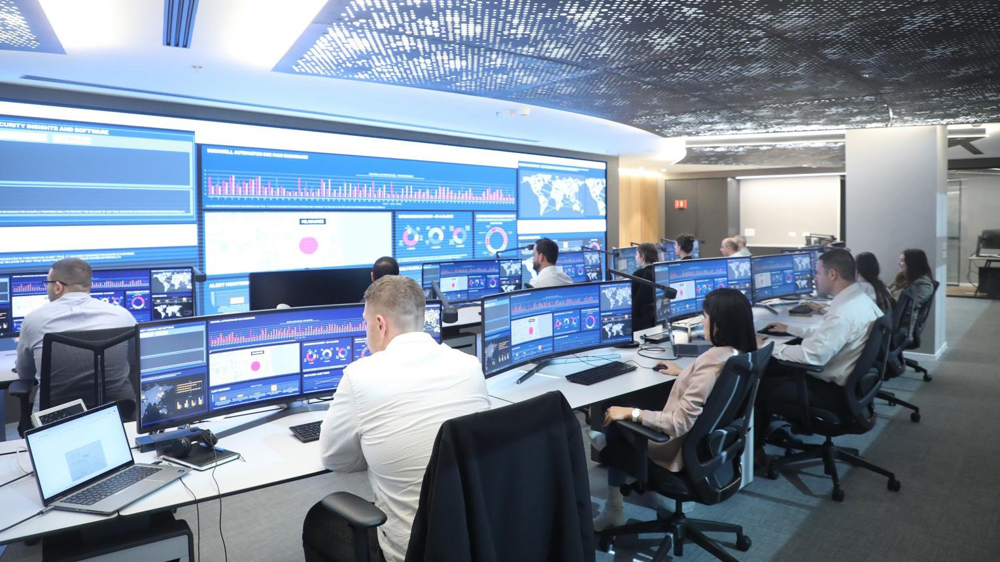

From Fragmented Telemetry to Unified Reliability in Six Phases
GridOps Intelligence's predictive operations lifecycle moves UK infrastructure SMEs from reactive "fix-it-when-it-breaks" maintenance to proactive, data-driven reliability management protecting asset uptime, reducing grid costs, and ensuring permanent regulatory compliance.
Connect & Ingest Legacy SCADA & Industrial Sensor Data
GridOps Intelligence connects directly to legacy SCADA systems, industrial IoT sensors, energy meters, and operational technology via a Zero-Overhaul software bridge. No hardware replacement. No middleware overhaul. The platform structures data from Modbus and DNP3 protocols instantly.
Apache Kafka and MQTT brokers automate the ingestion of high-frequency data from industrial sensors and legacy meters providing sub-300ms data pipeline latency across substations, renewable energy sites, and industrial facilities.

Build Each Asset's Unique Criticality Vector
The Multiaxial Asset Criticality Vectorization engine evaluates each asset based on its systemic impact calculating a "Criticality Score" that considers load variations, environmental stress, and grid position. Unlike generic threshold alerts, this is context-aware intelligence.
This Criticality Score is stored as the asset's permanent operational intelligence ensuring that failure patterns are recognized even through staff turnover or seasonal infrastructure changes, eliminating institutional "knowledge loss."
Behavioral Drift Detection 14 Days Before Failure
The Asset Behavioural Drift Detection Matrix identifies "micro-variances" tiny anomalies in thermal, vibration, and electrical data that precede major failures. The system distinguishes genuine failure precursors from operational noise with 94% accuracy.
When a transformer begins subtle thermal drift or a wind turbine bearing shows irregular vibration patterns, GridOps detects the composite failure signature weeks before a catastrophic failure occurs providing a vital planned intervention window.

Edge-AI Inference 24/7 Even Without Connectivity
The Edge-First architecture processes critical telemetry locally on NVIDIA Jetson Orin modules ensuring uninterrupted 24/7 monitoring for remote wind farms, rural substations, and industrial sites with limited or no network connectivity.
Unlike cloud-dependent competitors, GridOps sustains 95% of its predictive functionality during complete network dropouts. Localized processing also minimizes data attack surfaces providing built-in OT cybersecurity for infrastructure assets.
Automated Maintenance Workflows & Prioritized Work Orders
GridOps automatically generates prioritized maintenance work orders based on failure probability and asset criticality scores. Front-line operators receive clear, actionable intelligence no data science team required. The right engineer is dispatched to the right asset at the right time.
Human-in-the-loop verification ensures high-risk criticality scores are reviewed by senior engineers before automated actions maintaining governance requirements for essential UK infrastructure services.

Automated NIS 2018 & Ofgem Compliance Reporting
GridOps closes the loop automatically generating immutable audit trails and resilience reports required by Ofgem and UK NIS 2018 regulators. Compliance becomes an operational advantage, not a manual administrative burden.
Every maintenance action, criticality score, and efficiency gain is logged, encrypted, and stored in a GDPR-compliant digital archive keeping SME operators "audit-ready" at all times without dedicated compliance staff.